The Goal, and the Map of This Journey
Generative modeling has one job: given samples of data x, learn the distribution p(x) well enough to draw new samples from it. The difficulty is always the same: real data lives on a thin, twisted manifold inside a huge space, and we must build a bridge between something easy to sample (a Gaussian) and that manifold.
Every model in this blog is one bridge design. The VAE builds the bridge as a single learned leap. Diffusion builds it as a thousand tiny steps, and that one change unlocks everything else: the DDPM training recipe, the score matching interpretation, the SDE limit, and the DDIM shortcut are four descriptions of the same staircase.
The Anchor: What a VAE Actually Does
Quick but careful recap, because every piece returns later. A VAE posits a latent variable model: sample z from a simple prior, decode it into data:
Since we cannot maximize log p(x) directly, we introduce an encoder q_φ(z|x) as a stand-in for the true posterior and derive the quantity every generative model in this blog secretly optimizes. Start from log p(x), multiply by 1, and split:
The ELBO reads as a contract: reconstruct well (first term) while keeping the latent code simple (second term). Training uses the reparameterization trick, z = μ_φ(x) + σ_φ(x) ⊙ ε with ε from N(0, I), so gradients flow through the sampling.
Why the single leap hurts
Blurry samples. The decoder must map every neighborhood of the prior to a plausible x in one function evaluation. Ambiguity gets averaged, and averages of images are blur.
A fragile two-network tug of war. The encoder is learned, so it can cheat. If the decoder grows strong enough, the KL term pushes q(z|x) onto the prior and z stops carrying information: posterior collapse. The two networks are coupled through one bottleneck and they fight.
One step must do everything. Turning pure noise into a face is simply a very hard function. We are asking one network forward pass to perform the whole miracle.
The Bridge: Stretch One Leap Into a Thousand Steps
Here is the single thought that creates diffusion models. Keep the VAE skeleton, change three design choices:
1. Make the encoder fixed, not learned. Corrupting an image is easy, no network needed: just add a little Gaussian noise. The "encoder" becomes a dumb, frozen noising rule. Half of the VAE tug of war disappears, and posterior collapse becomes impossible because there is nothing to collapse.
2. Keep the latent the same size as the data. No bottleneck. The latent of an image is a noisier image.
3. Take many tiny steps instead of one leap. Chain T = 1000 noising steps until the image is indistinguishable from pure Gaussian noise. The generative model then learns to walk back down the chain, undoing one small step at a time.
Why tiny steps are the magic: undoing a tiny corruption is almost easy. If only a whisper of noise was added, the reverse step is provably close to a Gaussian whose mean is a small correction of the input. A thousand easy problems replace one impossible one. Formally, a diffusion model is a hierarchical VAE with a fixed encoder, and its training objective will turn out to be exactly an ELBO.
The Forward Process: Drowning Data, Carefully
Fix a small noise schedule β₁ … β_T (typically growing linearly from 0.0001 to 0.02 over T = 1000). One forward step shrinks the signal slightly and adds a matched dose of noise:
Chaining Gaussians gives Gaussians, and the whole chain collapses into one jump. Define α_t = 1 − β_t and the running product ᾱ_t = α₁α₂⋯α_t. Then:
Concrete numbers with the standard schedule: ᾱ₁₀₀ ≈ 0.90 (image barely dusty), ᾱ₅₀₀ ≈ 0.08 (mostly noise, shadows of structure), ᾱ₁₀₀₀ ≈ 0.00004 (statistically pure Gaussian). The endpoint is the prior, by construction, with nothing learned.
Our running worked example, used through the whole blog: a one pixel image x₀ = 1.0, at a time where ᾱ = 0.5. Then x_t = 0.707 × 1.0 + 0.707 × ε. Suppose the dice give ε = 0.3. The noisy pixel is x_t = 0.707 + 0.212 = 0.919. Remember these three numbers: clean 1.0, noise draw 0.3, observed 0.919.
The Reverse Process: the Math That Makes It Work
Generation means sampling x_T from the prior and walking the chain backwards through p_θ(x_{t−1}|x_t). The true reverse kernel q(x_{t−1}|x_t) is intractable: answering "what was the image before this noise" requires knowing the whole data distribution. But here is the miracle that powers all of DDPM: conditioned on the clean image, the reverse step is an exact, known Gaussian. Bayes' rule on three Gaussians gives, in closed form:
So the only missing ingredient at generation time is x₀ itself, the very thing we are trying to create. The plan: train a network to guess it. And the ELBO tells us exactly how, because the hierarchical VAE view of §3 decomposes the bound into per step terms:
The reparameterization that changed everything
The network could predict x₀ directly. DDPM instead solves the forward equation for the noise: since x_t = √ᾱ_t x₀ + √(1−ᾱ_t) ε, knowing the noise is knowing the image: x₀ = (x_t − √(1−ᾱ_t) ε)/√ᾱ_t. Substituting this into μ̃ and simplifying collapses the entire weighted ELBO into one stunningly simple objective:
Run the worked example through it. We observed the noisy pixel 0.919 at ᾱ = 0.5. The network sees (0.919, t) and must output the noise that was drawn: 0.3. If it predicts ε̂ = 0.25, the loss on this sample is (0.3 − 0.25)² = 0.0025, and the implied clean pixel is x̂₀ = (0.919 − 0.707 × 0.25)/0.707 = 1.05, slightly off the true 1.0, exactly consistent with the slightly off noise guess.
BUT WAIT Why train the network to predict the noise ε instead of just predicting the clean image x₀ directly? They are linearly equivalent, so why does everyone choose ε? ▶
Equivalent in algebra is not equivalent in optimization. Three practical reasons the field settled on ε.
The target has constant scale. ε is always a unit Gaussian, at every t. An x₀ target makes the task trivially easy at small t (the input nearly is x₀) and brutally hard at large t, so the loss landscape across t is wildly uneven. The ε target keeps every timestep's regression in the same numeric range.
The implicit loss weighting is better. Plugging the ε parameterization into the ELBO and then dropping the per term weights (the L_simple move) silently downweights very low noise steps, which are perceptually unimportant, and emphasizes the mid range where structure is actually decided. Predicting x₀ with uniform weights does roughly the opposite.
It matches the geometry of the problem. At high noise, x_t is mostly ε, so predicting ε is close to an identity task with a structured residual, a friendly shape for neural networks, similar in spirit to why residual connections work.
The honest footnote: the choice is not sacred. Later systems revisit it. The v-parameterization (v = √ᾱ ε − √(1−ᾱ) x₀) interpolates between the two and behaves better for fast samplers and distillation, and some modern models predict x₀ at high noise levels. The deep point stands: all of these are linear re-labelings of one underlying object, the score of §7.
DDPM in Practice: Train, Then Walk Back Down
Training is embarrassingly simple. Loop forever: pick an image, pick a random timestep, pick fresh noise, blend, regress:
Sampling walks the chain top down. At each rung, use the noise guess to form the posterior mean, then add back the right amount of fresh noise (the reverse step is a distribution, not a point):
Score Matching: the Physics Hiding Inside ε_θ
Now the second language. Forget chains for a moment and ask a different question: instead of learning the density p(x), what if we learned its gradient field?
Why prefer the gradient over the density itself? Because of the partition function. Any unnormalized model p(x) = e^{f(x)}/Z needs the intractable constant Z to be a density, but the score kills it: ∇ log p = ∇f − ∇ log Z = ∇f, and Z vanishes because it does not depend on x. Scores are learnable where densities are not.
And if you own the score, you can sample without ever knowing p, by noisy hill climbing, Langevin dynamics:
One problem blocks the naive plan: where data is absent, the score of the raw data distribution is undefined or useless, and a fresh sample starts exactly there, in the empty void far from the manifold. The fix is the same trick diffusion already made: blur the data with Gaussian noise. The noised distribution fills all of space with gentle gradients pointing back toward the manifold. Use a ladder of noise levels: heavy noise gives far reaching arrows, light noise gives precise ones.
The final piece is the theorem (Vincent, 2011) that makes the score learnable, denoising score matching: the score of noise blurred data is exactly computable from the noise itself. For our Gaussian corruption, the conditional score is ∇ log q(x_t|x₀) = −ε/√(1−ᾱ_t), and regressing on it recovers the true marginal score. Set that next to the DDPM objective and the two languages collide:
The SDE View: Take the Step Size to Zero
Third language. DDPM takes 1000 discrete noising steps. What happens as T goes to infinity and each step becomes infinitesimal? The discrete chain converges to a stochastic differential equation, continuous time noising (Song et al., 2021):
The payoff for going continuous is a classical theorem (Anderson, 1982): every diffusion SDE has an exact reverse time SDE, and the only unknown object in it is the score:
And the continuous view hands us a gift the discrete chain hid. The same marginal densities p_t can be produced by a deterministic equation, the probability flow ODE:
BUT WAIT If the probability flow ODE is deterministic, where does the diversity of generated images come from? Doesn't generation need randomness? ▶
All the randomness moves to a single moment: the draw of the starting point x_T from the Gaussian prior. After that the ODE is a fixed, invertible map from noise space to image space. Different starting noise, different image; same starting noise, exactly the same image, every time.
This is not a weakness, it is a feature with three consequences. First, every image gets a unique latent: run the ODE forwards (data to noise) and you can encode any real image into the noise space, then edit there and decode back, which is the basis of diffusion based image editing and interpolation. Second, the map is smooth, so nearby noises decode to semantically nearby images, giving meaningful latent interpolations. Third, determinism is what allows big solver steps: a smooth ODE trajectory can be integrated with 20 to 50 evaluations where the jittery SDE needed a thousand, because there is no noise to resolve along the way.
The SDE sampler is not obsolete though. The fresh noise it injects at every step actively corrects accumulated errors of the score network, a stochastic regularizer along the trajectory, which is why full SDE sampling often edges out ODE sampling in final quality when you can afford the steps. Speed versus self correction is the real trade.
DDIM: the Shortcut That Needs No Retraining
Fourth language, and the practical payoff. DDPM sampling is slow because its derivation assumed a Markov chain: to honor the per step posterior, you must visit every rung. Song et al. (2020) asked a sneaky question: which other processes have the exact same marginals q(x_t|x₀), the only thing the training objective ever used?
Answer: an entire family of non Markovian processes, indexed by a noise knob σ_t. They all share the marginals, so the already trained ε_θ serves every member, no retraining. The generalized reverse step makes the logic explicit:
The knob interpolates between everything you have seen. Set σ_t to the DDPM value: you recover stochastic DDPM exactly. Set σ_t = 0: every step is deterministic, and this is DDIM. In the continuous limit, DDIM is precisely an integrator of §8's probability flow ODE. The four languages have fused.
And because each DDIM step explicitly reconstructs x̂₀ and re-noises it, nothing forces consecutive rungs: jump t = 1000 → 950 → 900 → … and take 20 or 50 strides instead of 1000 steps. Run the worked example once more: at ᾱ = 0.5 the model saw 0.919 and predicted ε̂ = 0.25, so x̂₀ = 1.05. A DDIM stride to ᾱ_next = 0.8 computes x_next = √0.8 × 1.05 + √0.2 × 0.25 = 0.939 + 0.112 = 1.051, landed in one stride, no dice rolled.
One Object, Four Lenses
Step back and the whole blog is one sentence: everything trains the same network, and everything samples the same field. The noise predictor, the score, the reverse SDE drift, and the DDIM direction are linear re-labelings of one learned object.
| Lens | The object | Training view | Sampling view | Buys you |
|---|---|---|---|---|
| Hierarchical VAE | per step posterior | ELBO, decomposed per rung | ancestral, rung by rung | the derivation, the why of L_simple |
| DDPM | ε_θ(x_t, t) | noise regression | denoise + re-noise, T steps | stable training, SOTA quality |
| Score matching | s_θ = −ε_θ/√(1−ᾱ) | denoising score matching | annealed Langevin | the physics, no partition function |
| SDE / ODE | drift field with s_θ inside | continuous time DSM | any numerical solver | theory, inversion, fast solvers |
| DDIM | same ε_θ, σ = 0 | none, reuses DDPM weights | 20 to 50 strides, deterministic | speed, latents, editing |
Where the story goes from here
Latent diffusion (Stable Diffusion) runs the entire machinery of this blog inside the latent space of, fittingly, a VAE: the anchor of §2 returns as the compressor that makes diffusion affordable. Classifier free guidance steers the score field with a conditioning signal, sharpening samples toward a prompt. Distillation and consistency models compress the ODE trajectory into one or few network calls. Flow matching, the current frontier, learns the probability flow field directly with straight line paths, skipping the stochastic scaffolding entirely. Every one of these is a move on the board this blog laid out, and you now read the board fluently.
A diffusion model is a thousand layer VAE whose encoder is frozen Gaussian noising. Training reduces to guessing the noise in a corrupted sample, which is provably the same as learning the gradient field of the noised data distribution. Sampling is rolling back the corruption, either stochastically (DDPM, the reverse SDE) or deterministically along the probability flow (DDIM, the ODE), trading self correction for speed. One network, four lenses, one bridge from Gaussian chaos to the data manifold.